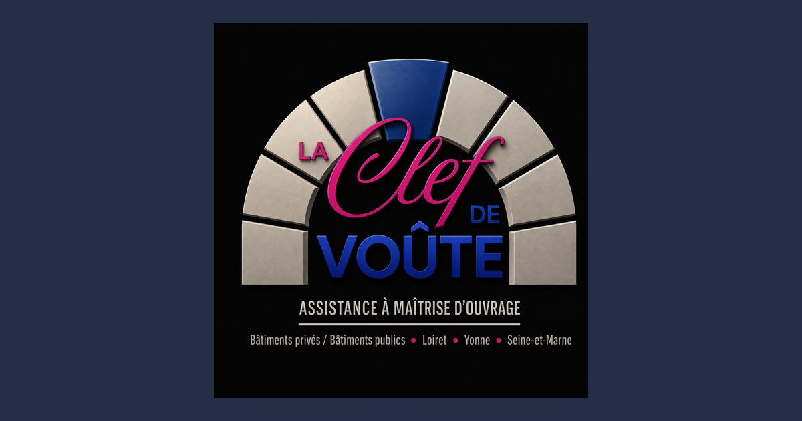

AMO ou maîtrise d'œuvre : quelle différence, et pourquoi les deux sont complémentaires
Deux métiers complémentaires, souvent confondus. On fait le point pour savoir qui fait quoi sur votre projet de construction ou de réhabilitation.
Lire l'article